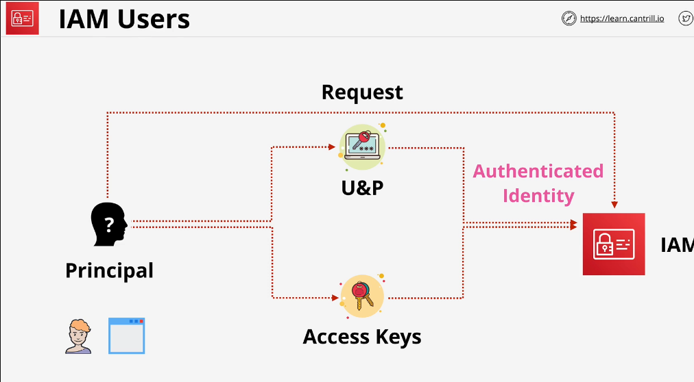
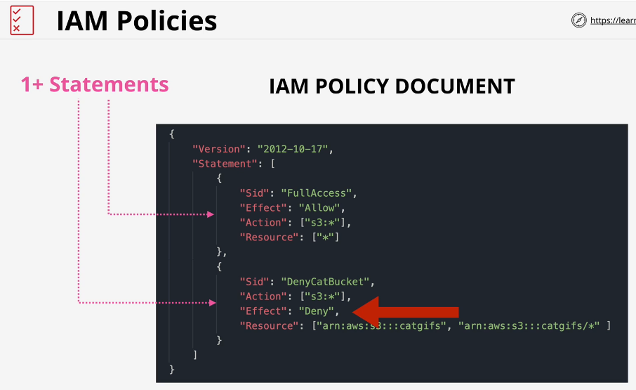
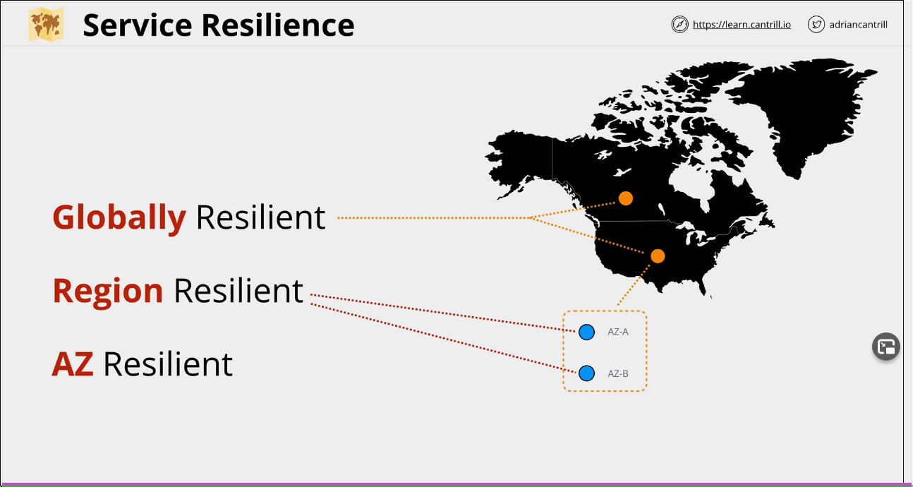
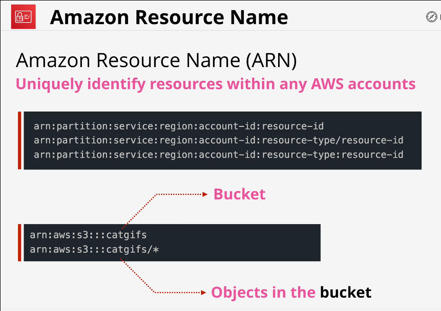
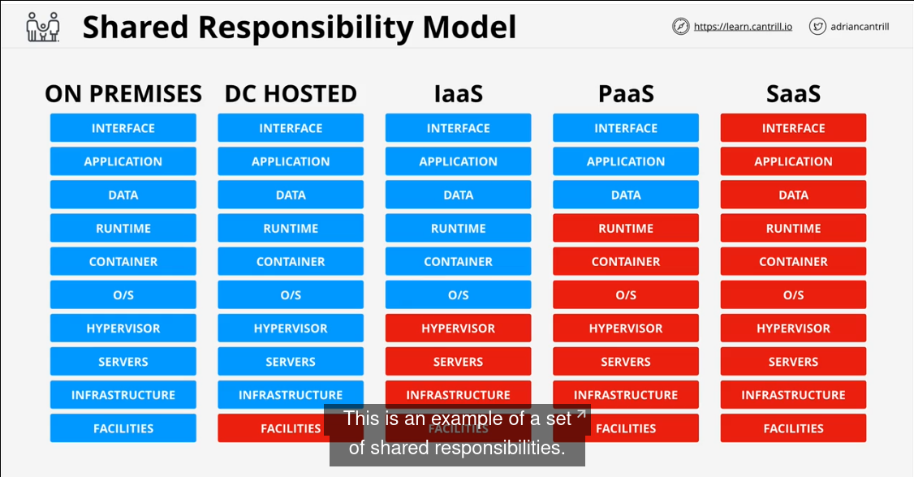
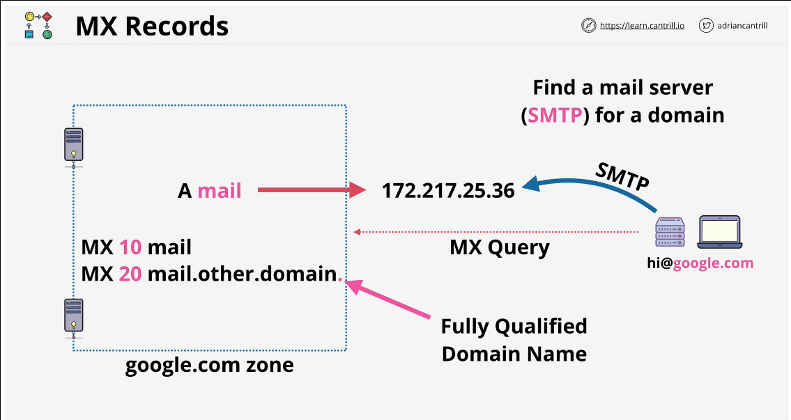
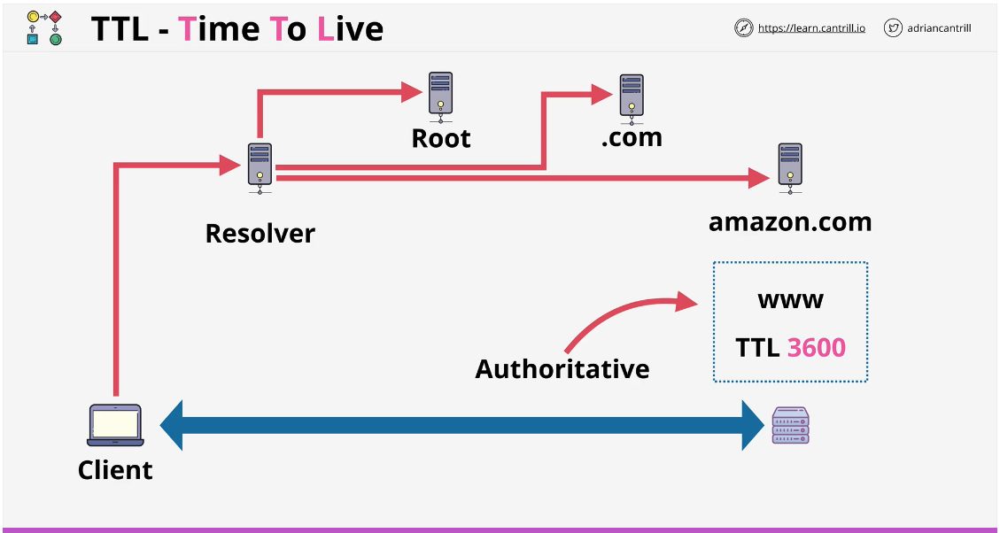
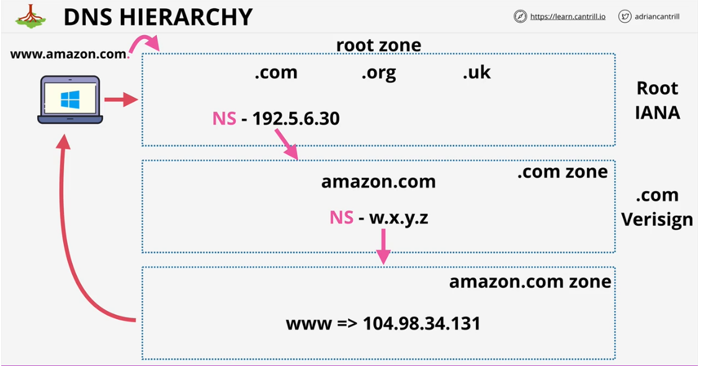
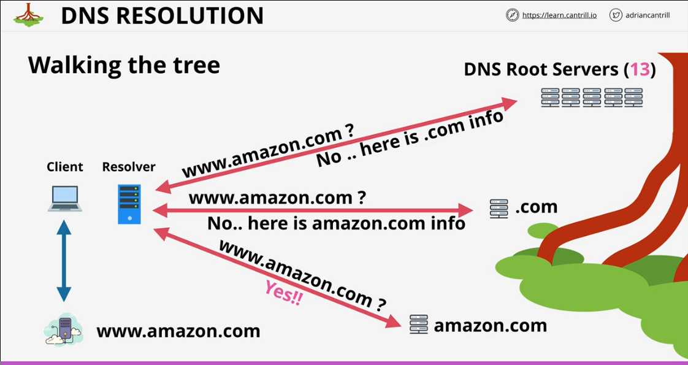
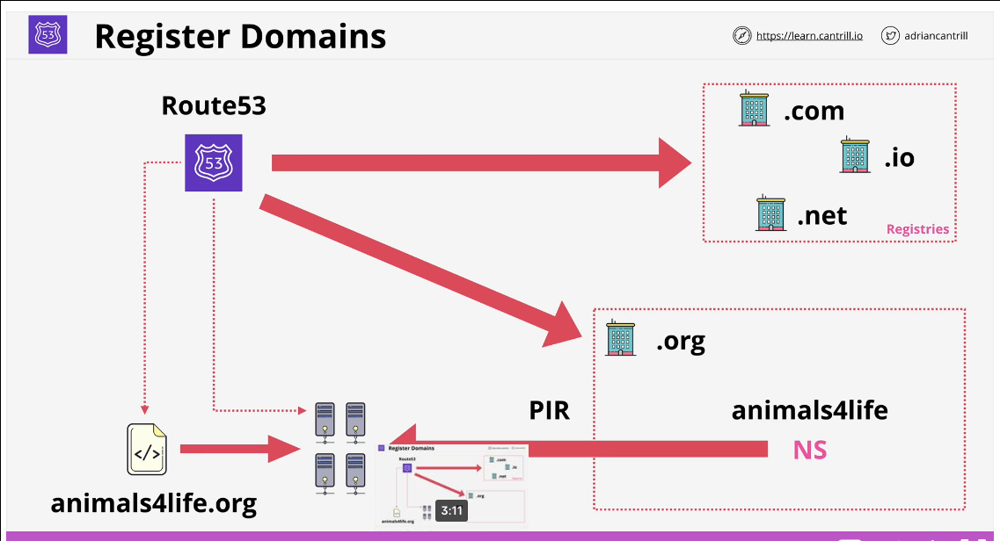

Aws General
Table of Contents
- 1. AWS Accounts aws account
- 1.1. Account Creation / best practices creation
- 1.2. MFA :: Multi Factor Authentication mfa
- 1.3. IAM :: Identity and Access Management iam
- 1.3.1. Create other
identitiesinside the root account identity - 1.3.2. Principals principal
- 1.3.3. IDP idp
- 1.3.4. Authentication authentication
- 1.3.5. Auhtorization
- 1.3.6. Identity Federation federation
- 1.3.7. Exam Notes exam_tips
- 1.3.8. IAM Access Keys keys
- 1.3.9. Policies policy
- 1.3.10. Policy Document document
- 1.3.11. Example Document example exam_tip
- 1.3.1. Create other
- 1.4. Root User root user
- 1.5. AWS Organizations organizations
- 2. Lambda lambda
- 3. aws-cli cli aws
- 4. Cloud Computing aws cloud
- 5. AWS Infrastructure aws infrastructure
- 6. Virtual Private Cloud vpc
- 7. Elastic Compute Cloud ec2
- 8. storage storage
- 9. Cloud Formation cfn cloud_formation
- 10. Cloud Watch cloudwatch
- 11. Cloud Trail cloudtrail
- 12. Site Format Example ( for reference )
- 13. Shared Responsibility Model
- 14. High Availability, Fault Taulerance, Disaster Recovery ha fault_tolerance dr
- 15. DNS dns
- 16. route 53 route53
1 AWS Accounts aws account
- Containers for Identities and Resources
- Must have unique email address, this is the Root User
1.1 Account Creation / best practices creation
- General/Master account are the same.
- Root User is within this Master account and created upon creatin of master account.
- Root user has full access of this entire account.
1.2 MFA :: Multi Factor Authentication mfa
- Generates a code that changes periodically
1.3 IAM :: Identity and Access Management iam
- By default no permissions
- Comes with AWS accounts by default. Provided Free, no cost.
- attached to identities such as
- iam users, iam groups, iam roles
- Globally resilient service, data secure across ALL AWS regions
1.3.1 Create other identities inside the root account identity
- roles roles
- Is a real identity, can be referenced within a resource policy
- Existing on-prem identities can be assigned roles when using single sign on or there are more than 5000 existing identities
- Temporary credentials are assigned via STS for roles
- When to use a role
- unknown number of users/apps access, OR over 5000 uses
- Can be Temporary
- When something temporarily needs to do something, then stops, borrowing permissions for a short time
- Attachable Policies policy
- Lambda Execution Roles lambda
- Has permissions policy via role to use AWS functions/services
- Uses
sts:AssumeRoleto access AWS resources based on whatever the Role has. The runtime environment gets these credentials. - Without Roles for Lambda you would have to hard key keys and permissions.
- Break Glass Key
- Made for emergency to provide different permissions to a principal
- groups groups
- users users
- IAM Users
- Anything requiring long term aws access, such as: individual person/application or service accounts
- If you can picture one thing, a named thing that needs access or policy, it should be a user
- (no term)
- Can have Policies attached
1.3.2 Principals principal
- Principals
- (Principal or application) makes requests to IAM to interact with a resource
- Authentication
- Princial on proves that it is the identity it claims to be
- username and password OR Access keys
- Authenticated Identity
- a principal that proves that it is the identity it claims to be, having used Authentication
- Policies
- Once ther is an authenticated identity it can know which Policies will apply
- Diagram

1.3.3 IDP idp
- An ID Provider (IDP)
- manages identities (create/etc)
1.3.4 Authentication authentication
- Prove who you are
- username/pass/bio
1.3.5 Auhtorization
- Policies
- what you may do
1.3.6 Identity Federation federation

1.3.7 Exam Notes exam_tips
- IAM has no cost and is provided free
- IAM is a global service, all AWS zones, and therefore has global resilience
- IAM allows or denys identities on it’s corresponding AWS Account
- IAM has no
directcontrol over external accounts/users - IAM lets the account owner make use of
identity federationandMFA. Identity Federation are other external ways people authenticate - IAM groups cannot be logged into
- No all users group by default
- Groups are not a true identity and cannot be referenced as a principal in a policy
- External accounts can be used in AWS Directly : FALSE, Google, Facebook, etc cannot use AWS directly BUT an external account can assume an AWS role that is able to access a resource
1.3.8 IAM Access Keys keys
- Username and Password :: Web console
- IAM user may only have one username and one password
- Access Keys :: APIs and console
- IAM Users can have up to two access keys
- Can be created/deletes and made inactive/active
- Must be changed by the user
- Made of two parts: accesskeyid and secretaccesskey
- Cannot be downloaded again
- must be deleted and then recreated
- Two sets for rotation of keys
- Root users should not have access keys, instead should be IAM users
- Added via “My Security Credentials -> Create Access Key”
1.3.9 Policies policy
- Inline Policy
- Json Policy Document
- Applying a policy to each resource
- Primarily used for Exceptions
- Managed Policy
- Created as it’s own object that is attached to policies
- Good for: Users, Groups, Roles
- Reusable, Low Management Overhead
- Resource Policy
- is a form of resource policy, similar to an identity policy but attached to the bucket. the advantage is cross account permissions.
- You can determine if a policy is resource or identity policy IF a document has a “Principal” definition. If it does, it is likely a resource policy. Alternatively, if a this field is absent, the implication is that identity the policy is applying to is the principal.
- bucket policies are a type of resource policy: S3 Security
- there can only be one policy attached to a bucket, but it can have as many statements as needed
1.3.10 Policy Document document
- Statements statement
- Permit/Grant/Deny AWS Resources
- Statement ID sid
- optional, explains what this does, inform reader what a statement does. Best practice to always use Statement IDs
- example:
"Sid": "FullAccess",
- Effect effect
- What the statement does, allow or deny
- Example:
"Effect": "Allow",
- Action action
- What it does
- Example:
"Action": ["s3:*"],
- Resource resource
- AWS Resource, use wildcards, AWS Resource Name (arn)
- Example:
"Resource": [ "arn:aws:s3:::catgifs", "arn:aws:s3:::catgifs/*"]
- Priority Level of Statements
- Explicit Deny
- If something is explicitly denied, nothing can overrule it.
- Explicit Allow
- Always takes affect unless there is an explicit deny defined
- Default Deny
- The default is implicit deny
1.3.11 Example Document example exam_tip
{
"Version": "2012-10-17",
"Statement": [
{
"Sid": "FullAccess",
"Effect": "Allow",
"Action": ["s3:*"],
"Resource": [ "*"]
},
{
"Sid": "DenyCatBucket",
"Effect": "Deny",
"Action": ["s3:*"],
"Resource": [ "arn:aws:s3:::catgifs", "arn:aws:s3:::catgifs/*"]
},
]
}
- Diagram 
1.4 Root User root user
- Tied to email supplied upon creation
- Full control over that account
- Cannot be restricted
1.5 AWS Organizations organizations
- Management Account (Master Account)
- An AWS account creates an organization but lives outside of the account, is not WITHIN the AWS account
- Member Accounts
- Other AWS Accounts that can be added to the organization
- Organization Root
- is a container within an organization that can contain AWS accounts such as Member Accounts
- Organization Units
- Units within an Organization, can contain other OUs or AWS accounts
- Billing
- Billing is passed through to the management account of the organization, or Payer Account
- One bill for everything in the organization
- Role Switch
- switch from a federated account into a different role in another AWS account that is within the organization
- This is setup automatically if you create a new account from within an existing organization
- when inviting an existing account this must be configured
- (no term)
- Creating Accounts
- Can create accounts directly within the organization instead of the invitation process
1.5.1 Example

1.5.2 Organziations Allow
- Single payer and centralized cost trackign
- Create and invite accoutns
- Apply policy-based controls
- simplify organization-wide management of AWS services
1.5.3 Service Control Policies scp service_control_policy
- Policy Document that can be attached to an organization as a whole, or one or more OU, or even individual AWS Accounts
- These inherit down the organization tree
- Management Account cannot be affected by SCP, cannot be restricted. Best practice is then to not use the management account, and instead different accounts created for things
- SCP limits what the account can do, including the root account. SCPs are account permission boundaries. SCPs are not restricting root user, they are restricting what the actual AWS Account can do, thereby restrticing the root user. SCPs do not grant access, they only restrict / boundary

2 Lambda lambda
3 aws-cli cli aws
- Must provide a profile with each command, or specify a default profile
4 Cloud Computing aws cloud
4.1 Defined by NIST nist
- 5 characteristics
4.1.1 on demand self service self_service
4.1.2 broad network access net_access
4.1.3 resource pooling resource_pooling
4.1.4 rapid elasticity elastic rapid
4.2 Multicloud multicloud
- multiple public cloud environments
- Use
morethanonepublic cloud
4.2.1 “Singplepane” singlepane
a service provider that provides access to several cloud vendors via one “pane”
4.3 Hybridcloud hybridcloud
- private cloud in conjunction with public cloud together
PublicANDprivatecloud
4.3.1 NOT the same as cloud and on-prem, that is a HYBRID ENV exam_tip
4.4 private cloud
- on premises
realcloud
4.5 public cloud
- ONE public cloud
4.6 Cloud Service Models as_a_service service
4.6.1 unit of consumption
- what is consumed, what you are responsible to manage
4.6.2 Infrastructure as a Service iaas
- virtualization, servers, infrastructure and facilities are owned by vender, OS is consumed by the user
4.6.3 Platform as a Service paas
- virtualization, servers, infrastructure, facilities, OS and container are owned by vender, runtime is consumed by the user
4.6.4 Software as a Service saas
virtualization, servers, infrastructure, facilities, OS and container, runtime and data are owned by vender, the application is consumed by the user
5 AWS Infrastructure aws infrastructure
5.1 References refernces
5.2 AWS Regions region
- creation of AWS, does not technically map to a continent
- has ALL AWS avaible: compute, storage, db, AI, analytics
- Geographically spread
5.2.1 Benefits of regions exam_tip
- geographic separation
- isolated fault domain
- geopolitical seperation
- different governance
- location control
- Performance
5.2.2 Naming Convention
- REGION CODE
- Code/designation, ex:
ap-southeast-2 - REGION NAME
- Real name, ex: Asia Pacific (Sydney)
5.3 AWS Edge Location edge_location
5.3.1 CDN-esque, far more widespread, store data closer to customers. Content Distribution Services CDS CDN
5.4 AWS Availability Zones availability_zone
- availability zone
- zones INSIDE of a region, designated with a letter following the region code ( see Naming Convention )
- Isolated Facilities
- in case of catastrotic failure. No visibility as to what is inside an AZ
5.5 Service Resilience resilience
- Globally Resilient
- Entire region can fail, service will continue
- Examples
- IAM, Route53
- Region Resilient
- One set of data per region, generally replicate data to other Availability Zones, within a region
- AZ Resilient
- Only within Availability Zones
- (no term)
- Cantril AWS Global Infrastucture

5.6 AWS Resource Name arn
- specific to every AWS resource
- ex:
arn:aws:s3:::bucket-name - in this exame region and account number are excluded as S3 buckets must have globally unique names
- ex:
- can use wildcards
5.6.1 Diagram diagram

5.6.2 exam tips exam_tips
Maximum numbers of IAM users per account
5000Maximum number of groups an IAM user can be in
10cases when NOT to use IAM
internet scale, larg orgs, org mergers
6 Virtual Private Cloud vpc
- VPC
- Private networks inside AWS
- one account & one region
- (no term)
- A VPC exists within a region, by default cannot cross this
- (no term)
- Regionally Resilient, see Service Resilience
- Hybridcloud
- can be used to connect to on-prem
- Multicloud
- can be used to connect to other cloud
- (no term)
- Private and Isolated by default
6.1 default VPC
- only ONE per region
6.1.1 Network
- VPC CIDR
- Network Provisioned for that VPC
- everything within VPC uses this network
- 172.31.0.0/16
- Availability zones each have a subnet within this CIDR
- Subnets are /20 in each AZ in the region
- can be removed
- (no term)
- Everything provisioned will get a public IPv4 Address
6.2 custom VPC
- can have MANY per region
- private by default
- May have custom
6.3 Internet Gateway igw
6.4 Security Group sg
- can be attached to as many or few services as needed
6.5 NACL nacl
7 Elastic Compute Cloud ec2
- EC2
- AWS implementation of Infrastructure as a Service
- unit of consumption is the service
- private by default and uses Virtual Private Cloud networking
- Instance fails if the AZ fails, see AWS Availability Zones
- different sizes and capabilities
- on demand billing per second
7.1 Instance Lifecycle lifecycle control
7.1.1 running
- Instance is running consuming CPU, RAM, Net, Disk and billing continues per second
7.1.2 pending
- instance is created but not yet started
7.1.3 stopped
- no CPU, RAM, Net, billing. but instance still bills per second for disk usage
7.1.4 terminated
- At this point the instance is deleted / removed / unprovisioned, no resource are consumed and no billing continues.
7.2 Amazon Machine Image ami
- AMI
- can be created FROM an Elastic Compute Cloud instance or an AMI may be used to create an EC2 instance
7.2.1 permissions
- public
- everyone allowed
- owner
- implicit allow
- explicit
- specific AWS accounts allowed
7.2.2 root volume
- boot drive
- etc
7.2.3 block device mapping disk
- which volume is boot, data, etc
7.2.4 AMI does NOT store
- instance settings
- network settings
7.3 Configuring an EC2 Instance demo
7.3.1 From console search EC2
7.3.2 Create keypair
7.3.3 Choose AMI
7.3.4 Select an Instance type
7.3.5 Configure Instance Details
- Virtual Private Cloud
- select a VPC, default or custom
- Network and AWS Availability Zones
- select one or let AWS select one for you
- auto assign public IPv4
- pick IP address settings.
7.3.6 configure storage storage
- root device is default
7.3.7 add tags
- add any tags relevant to this instance
7.3.8 configure Security Group
- works similar to a firewall
- by default ONLY provides SSH
- by default this gives SSH acess publicly
7.4 exam tip exam_tip
- billing per second
- private by default
- Availability Zone risilience, if the AZ fails the instance will fail
- storage used by default is local or Elasitc Block Storage
8 storage storage
8.1 Elasitc Block Storage ebs
8.2 S3 s3
- nearly infinitely scalable object storage, accessible from anywhere ( public )
- Good default storage solution
- Global storage Platform">regionally based / resilient, see Service Resilience
- lives in specific region, stored here when unsed, does not leave unless configurd to
- can be accessed from anywhere
- data replicated across all AWS Availability Zones in that region
- can tolerate failure of an AZ
8.2.1 data storage data
- great for Media: movies audio photo and large data sets
8.2.2 access
- UI
- CLI
- API
- hTTP
8.2.3 Objects object
- data that S3 stores
- the data talked about previously, etc. Files. see data storage
- Object Key
- Works with Keys (similar to a filename)
- this identifies an object in a bucket. Object Key + Buckets == access to this Object Value
- Object Value exam_tip
- The content that is stored. The maximum value is 5TB
- Diagram

8.2.4 Buckets bucket
- Holds your objects
- Buckets live in a specific region
- data does not leave unless configured to do so
- blast_radius is the AWS Regions
- infintely scalable storage system
- flat structure
- No concept of filenames, keys only
- Folders are prefixes and part of the object name

8.2.5 Patterns and Anti-patterns
- Object store not a file or block storage
- S3 has no filesystem
- cannot be mounted
- great for large scale and distribution
- good for offload, get data off an expensive EC2 instance and access it FROM Elastic Compute Cloud
- Can take data from, or put it TO many products, S3 is a great default
8.2.6 Configuring an S3 Bucket demo
- basics
- select a name using naming restrictions, see exam tips
- select AWS region
- bucket settings
- by default public access is blocked
- giving public access does not mean anyone can access, further configuration is required to grant access
- only root user and anyone with access can use and see this bucket
- by default public access is blocked
- access points
- metrics
- properties
- Removing S3 Storage
8.2.7 S3 Security security
- Can utilize Resource Policy to allow anonymous access
example:
{ "Version": "2012-10-17", "Statement":[ { "Sid": "PublicRead", "Effect": "Allow", "Principal": "*", "Action": ["s3:GetObject"], "Resource": ["arn:aws:s3:::someproject/*"] } ] }bucket policy for blocking an IP:

diagram of the same

- Block Public Access
- another boundary in response to accidentally open policies. These apply only to anonymous identities, this can be used as an override or failsafe
8.2.8 exam tips exam_tips
- Bucket names must be globally unique
- private by default
- only account root user will have access without explicit permission grant
- between 3 and 63 characters, all lowercase, no underscores
- must start with lowercase letter or a number
- cannot be IP formatted
- 100 soft limit, 1000 hard limit
- soft limit
- can be added by the user
- hard limit
- must contact AWS support
- (no term)
- Important if you are trying to allocate buckets per user.
- (no term)
- Bucket CAN use prefixes set for users
- Unlimited objects, sizes between 0 bytes and 5TB
- key = name, value = data
- is a public service and holds objects, not block storage, with unlimited amount of data
9 Cloud Formation cfn cloud_formation
- can be used for
- automation
- change management
- one-off creations
- consistent
- portable
9.1 Concets concepts
- update, delete, create resources via templates
- Infrastructure as code
- written in JSON or YAML
- Templates create a stack
9.2 Template template
9.2.1 resouces resouces
- this field is the only mandatory field
9.2.2 description
- a description of the template, what it does / resources / costs / etc.
- if a AWSTemplateFormatVersion is included, the description MUST be after this
9.2.3 metadata
- can control UI
9.2.4 parameters
- prompt the user for more information
- ex:
- number of AZs, names, sizes, etc
- can provide default values or even selection box
9.2.5 mappings
- create lookup tables
9.2.6 conditions
- things that will only occur when a condition is met.
- two setup process:
- conditions
- results (use the condition)
9.2.7 output
- what is presented after something is the tempate is run
9.3 Diagram
9.3.1 stack creation from template

9.3.2 stack update from template

9.4 stack
- physical living resources created from a Template
9.5 Configuring CFN configure example
- Needs a template (YML or JSON)
9.5.1 Must first create a stack
- Prerequisites
- template ready
- sample
- create
9.6 Session Manager session_manager
- must be defined within the template to be used
- Session manager is away of connecting to an EC2 instance without using SSH ( or RDP ? more info needed ) through the webUI
9.7 exam tips exam_tips
- if a AWSTemplateFormatVersion is included, the description MUST be after this
- is a resource defined in a cloudformation template
- physical resource created by creating a CF stack
10 Cloud Watch cloudwatch
- operational management and monitoring
10.1 Collects and manages operational data
- data about how something runs, logs, etc.
- public service
- can be used across clouds, see Multicloud or Hybridcloud, etc
10.2 metrics metrics
- data relating to aws products, apps, on-prem
- disk space, number of visitors, etc.
- interfaces:
- api , ui, etc
10.3 Diagram diagram media

10.4 Namespace
- a container, how to keep things within a ruleset
- All data goes into a AWS Namespace, done by default
- contains metrics
10.5 Datapoint
- measurepoints of metrics
- consists of:
- timestamp
- value
10.6 Dimensions
- name value pairs sent in with data points to a CloudWatch namespace for a metric. An example is:
- Name=InstanceID, Value=i-xxxxxx
10.7 Alarms
- Linked to a metric to take an action based on a Metric with two states, OK and ALARM, or INSUFFICIENT DATA ( still gathering )
- Everything is good or as expected
- An Alarm event is triggered when something is NOT correct
- SNS
- Send a notification
- Action
- Excecute something to correct the alarm condition
10.8 Configuration
10.9 Logs logs
- integrates with
- ec2, vpc, lambda, cloudtrail, r53, etc
- Store, monitor and access logging data
- Public service, useable from AWS or on-prem
- Able to generate metrics based on logs via metric filter which you can then set up alarms, etc, based on metrics
- Stored into log streams, each log stream is an instance of one log for one instance.
- Example:
/var/log/messagesfor an EC2 instance is one log stream
- Example:
- Log groups can contain many log streams
- Example:
/var/log/messagesacross several EC2 instances
- Example:
10.9.1 Diagram diagram

11 Cloud Trail cloudtrail
- CloudTrail Event
- Actions in AWS are logged in CloudTrail via API calls. these actions can be from services, users, etc.Cloudtrail are regional services, but you can set a trail to “One Region” or “All Regions”. The bonus to all regions are if AWS adds new regions, they are automatically included. Global Service events go to US East 1.
- default 90 days event history, but can be stored in an S3 bucket which can be stored indefintely. Stored as compressed on JSON
- free by default
- stored and can be viewed in JSON
- This data can be stored into Cloud Watch for easier viewing/useage
- Events are either: management events or data events
- management events: creating ec2, etc
- data events: actions to s3 objects, etc. not enabled by default
- Organizational Trails
- MUST be set up from the Organization management account.
- Individual Trails
- can be setup by individual accounts
11.1 CloudTrail Creation
- When creating a trail thereis an option that must be ticked to enable for all accounts within the AWS Organizations. SNS can also be configured during trail creation
- Cloud Watch can also be configured during setup.
- can perform searches, history, event history processes, etc. Further log functionality.
- events can cause other things to happen.
- A role will have to be created for CloudTrail to interact with other services
- doing so creates a policy document to alloud cloudtrail to interact with cloudwatch logs
11.2 Pricing
- 90 Day history is free by default
- 1 copy (Trail) of management events free in every region, in each account, is free.
- additional copies (trails) of management events are 2.00 per 100,00 events.
- data events are 0.10 per 100,000 events, irrespective of how many trails you have, anytime data trails are enabled
11.3 exam tips exam_tips
- enabled by default for 90 days, no s3
- trails are how you configure for s3 and cloudwatch logs
- management events only be default, not data. data must be enabled individually
- global service events log to US EAST 1, trail must be enabled to capture, these are IAM, STS, CloudFront
- cloudtrail is not realtime, thereis a delay of around 15 minutes
12 Site Format Example ( for reference )
- Broad / general tips and info about the heading
12.1 References
- URLS go here that relate to the top heading
12.2 Sample: Idea / Subcategory
- item
- definition
related codeimportant keyword
12.3 Tags Used:
- examtip
- when something is highlighted or designated as a tip
- reference
13 Shared Responsibility Model
13.1 Security
- AWS Responsibility
- for the cloud
- client side encryption, auth, server-side encryption, net traffic
- OS, local FW
- Application identity and access mgmt
- CUSTOMER DATA : secured, backed up, etc
- Customer Responsibility
- security in the cloud
- hardware, global infra
- computer, storage, db, net, AZ, edge, regions
- software which provides the above
13.2 Diagram diagram

14 High Availability, Fault Taulerance, Disaster Recovery ha fault_tolerance dr
- High Availability
- aims to ensure agreed level of Ops performance (uptime, etc) for a higher than normal period
- online as often as possible
- usually measured as a percentage of uptime
- 99.9% is referred to as (three 9s), 8.77 hours downtime per year
- About minimixing outage, maximixing uptime. HA is not losing sesseion, etc
- Fault Tolerance
- much more than HA, something that enables a system to continue operating properly in event of failure of some (at last one) of it’s components no customer impact
- when HA is not enough
- example would be an active - active solution
- routing sessions around a failure in one system
- example : an airplane with duplicate, 2x more engines than needed
- Disaster Recovery
- set of policies, tools, procedures to enable recovery in a disaster situation
- pre planning
- plan FOR a disaster
- DR Process
- plan during an disaster
- (no term)
- copies of process AND data
14.1 Summary exam_tip
- HA
- Minimize any outages
- Fault Tolerance
- operate THROUGH a fault
- Disaster Recover
- how to recover when HA and FT fails
15 DNS dns
- DNS
- is a discovery service, translating machine into human and human into machine. IPs to Names and Names to IPs
15.1 zone
- stored in zone files, served by NameServers
- zone files hold DNS records
15.2 resolver
- finds a nameserver
- pointer to the DNS root server
- ISP or Router can hold this
15.3 terms
- dns client
- what device wants an address of a server
- examples
- laptop, phone, pc, IOT, etc
- resolver-
- software on device or server which makes DNS queries for client on it’s behalf
- Zone
- part of the DNS database database
- examples
- amazon.com
- ZoneFile
- what the data is
- examples
- records
- Nameserver
- where zonefiles are hosted
15.4 authorization
- trusted
- trust is passed, ex: .com root zone can trust amazon.com
15.5 TLD
- top level domains
- live in root zones
15.6 process of DNS
- configured resolver must:
a. DNS Client asks a resolver for the IP of a given DNS Name
b. DNS resolver communicates with one or more root server to acces the root zone, using root hints file, to begin finding the IP address.
- This is managed by IANA
- IANA controls the root zone
- Trust/Authoritative
- where trust lies between client and server. client can trust root by default, which trusts it’s ( ?branches? name for this? )
- find nameserver which hosts a zonefile
- query that nameserver for a record inside that zonefile
- pass this information back to the dns client
15.7 process attempt 2
- Client needs an IP from a Name, say www.amazon.com.
- Client uses resolver in ISP.
- Resolver uses root hints file to communicate with DNS root server and asks for www.amazon.com
- Root server nameservers does NOT have www.amazon.com, but they do know who has .com. servers and passes authorization here
- resolver talks to nameservers at .com., asks for www.amazon.com. Only authoritative for .com., does NOT have www.amazon.com. but does have amazon.com. because it was delegated that right when domain was registered, returns nameservers for amazon.com.
- resolver talks to amazon.com. nameservers, requests for www.amazon.com.
15.8 IANA
- does not own data, but knows WHERE to delegate to
15.9 distributed
- zone files stored on nameservers globally
15.9.1 DNS Root
- Domain Name
- Domains are read right to left, seperated by a period
- example
- www.amazon.com*.*
15.9.2 root servers
- 13 servers with databases ran by 12 different large global companies
- they only manage the servers, not the database
15.10 DNS Records dns_records
15.10.1 NS Records ns
- .com.
- managed by verisign
- holds many NS records for amazon.com
- point to servers managed by amazon.com team, where amazon.com zone lives
- holds many NS records for amazon.com
- amazon.com
- manages all *.amazon.com records
15.10.2 Record Types
- A and AAAA Record
- hostnames mapping to IP
- A record
- ipv4
- AAAA
- ipv6
- Cname
- canonical, host to host records
- MX
- Mail
- priority
- value
- can be a host
- ex
- mail (mail.google.com) or mail.other. <– FQDN
- (no term)
- Diagram 
- TXT
- Abritrary records for extended functionality
- often used to verify ownership
15.11 TTL ttl
- ttl
- numeric value set in seconds
- (no term)
- how long to hold or cache a record, how long a resolver should hold a record
- (no term)
- often a cause of failure in projects, if an upcoming change or project is happening that includes DNS changes, lower TTL days or more in advance
15.11.1 diagram diagram

15.12 diagrams diagram
15.12.1 Heirarchy

15.12.2 Resolution

15.13 exam tips exam_tips
config that points at the root servers IP and address:
root hintsHosts the DNS root zone:
root serverspoints at TLD authoritative servers
root zone- gTLD : Generic Toplevel domain
- ccTLD : country-code top level domain
Number of DNS Root Servers
13Number of organizations that manager the DNS Root Servers
12DNS Root Zone is managed by
IANAThe record type that is how a root zone delegates control of org to the org registry
NSOrg that maintains zones for a TLD
registryOrg that has relationships with the .org TLD zone mgr allowing TLD registration
RegistrarNumber of subnets in a default VPC
equal to the number of AZs in the region the VPC is locatedIP CIDR of a default VPC
172.31.0.0/16
16 route 53 route53
- route 53
- global service, single database
- similar to IAM?
- globally resilient
16.1 domain registry
- registries
- has relationship with main registries
- examples
- .com, .io, .net
- (no term)
- how R53 works for registration
- check with TLD for domain
- creates a zonefile for the new domain, called a hosted zone
- puts this file on four managed nameservers
- communicates with .org registry -> PIR and adds these NS records for the .ORG TLD using Name server records
16.2 Hosted Zones hosted_zones
- hosted zones
- DNS as a service, create and manage zone files ( hosted zones )
- hosted zones
- can be
- public
- internet
- private
- linked to VPC
16.3 Diagram
16.3.1 Registration
